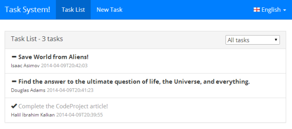
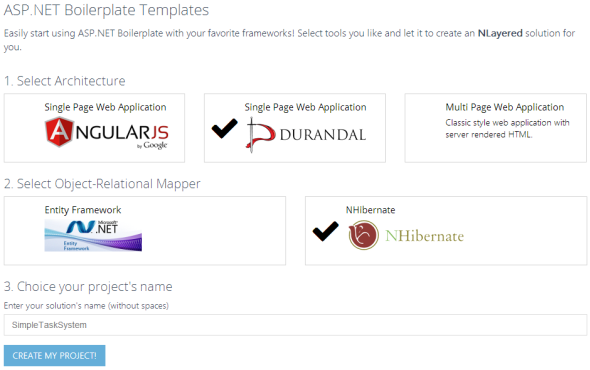
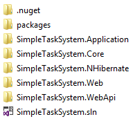
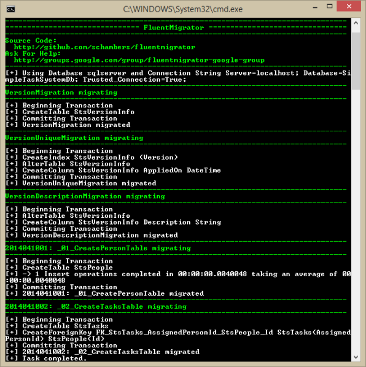
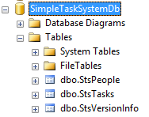
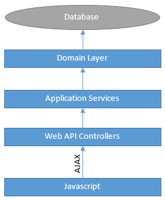
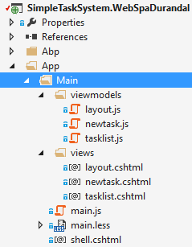
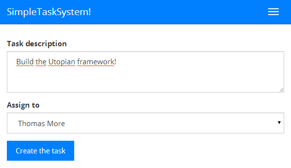
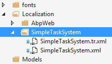

A comprehensive application made using ASP.NET Boilerplate. See http://www.taskever.com
DRY - Don't Repeat Yourself! is one of the main ideas of a good developer while developing a software. We're trying to implement it from simple methods to classes and modules. What about developing a new web based application? We, software developers, have similar needs when developing enterprise web applications.
Enterprise web applications need login pages, user/role management infrastructure, user/application setting management, localization and so on. Also, a high quality and large scale software implements best practices such as Layered Architecture, Domain Driven Design (DDD), Dependency Injection (DI). Also, we use tools for Object-Releational Mapping (ORM), Database Migrations, Logging... etc. When it comes to the User Interface (UI), it's not much different.
Starting a new enterprise web application is a hard work. Since all applications need some common tasks, we're repeating ourselves. Many companies are developing their own Application Frameworks or Libraries for such common tasks to do not re-develop same things. Others are copying some parts of existing applications and preparing a start point for their new application. First approach is pretty good if your company is big enough and has time to develop such a framework.
As a software architect, I also developed such a framework im my company. But, there is some point it feels me bad: Many company repeats same tasks. What if we can share more, repeat less? What if DRY principle is implemented universally instead of per project or per company? It sounds utopian, but I think there may be a starting point for that!
ASP.NET Boilerplate [1] is a starting point for new modern web applications using best practices and most popular tools. It's aimed to be a solid model, a general-purpose application framework and a project template. What it does?
Beside these common infrastructure, a module named zero is being developed. It will provide a role and permission based authorization system (implementing latest ASP.NET Identity Framework), a setting system, multi-tenancy and so on.
ASP.NET Boilerplate provides an application development model with best practices. It has base classes, interfaces and tools those make easy to build maintainable large-scale applications. But..
In this article, I'll show how to deleveop a Single-Page and Responsive Web Application using ASP.NET Boilerplate (I'll call it as ABP from now). I will use DurandalJs as SPA framework and NHibernate as ORM framework here. I prepared another article that implements same application with AngularJs and EntityFramework.
This sample application is named as "Simple Task System" and it consists of two pages: one for list of tasks, other one is to add new task. A Task can be related to a Person, can be active or completed. The application is localized in two languages. Screenshot of Task List in the application is shown below:

ABP provides a startup template for new projects (Even if you can manually create your project and get ABP packages from nuget, template way is much more easy). Go to www.aspnetboilerplate.com/Templates to create your application from template. You can choice SPA (Single-Page Application) project with optionally AngularJs or DurandalJs. Or you can choice MPA (classic, Multi-Page Application) project. Then you can choice EntityFramework or NHibernate for as ORM framework.

I named my project as SimpleTaskSystem and created a SPA project with Durandal and NHibernate. Downloaded project as a zip file. When I open the zip file, I see a solution is ready that contains assemblies (projects) for each layer of Domain Driven Design:

Created project's runtime is .NET Framework 4.5.1, I advice to open with Visual Studio 2013. The only prerequise to be able to run the project is to create a database. SPA template assumes that you're using SQL Server 2008 or later. But you can change it easily to another DBMS. See the connection string in web.config file of the web project:
<add name="Default" connectionString="Server=localhost; Database=SimpleTaskSystemDb; Trusted_Connection=True;" />
You can change connection string here. I don't change the database name, so I'm creating an empty database, named SimpleTaskSystemDb, in SQL Server:

That's it, your project is ready to run! Open it in VS2013 and press F5:

Template consists of two pages: One for Home page, other is About page. It's localized in English and Turkish. And it's Single-Page Application! Try to navigate between pages, you'll see that only the contents are changing, navigation menu is fixed, all scripts and styles are loaded only once. And it's responsive. Try to change size of the browser.
Now, I'll show how to change the application to a Simple Task System application layer by layer.
"Responsible for representing concepts of the business, information about the business situation, and business rules" (Eric Evans) [2]. In the Domain Driven Design (DDD), the core layer is the Domain Layer. Domain Layer defines your Entities, implements your business rules and so on.
Entities are one of the core concepts of DDD. Eric Evans describe it as "An object that is not fundamentally defined by its attributes, but rather by a thread of continuity and identity". So, entities have Id's and stored in a database.
My first entity is the Task:
public class Task : Entity<long>
{
public virtual Person AssignedPerson { get; set; }
public virtual string Description { get; set; }
public virtual DateTime CreationTime { get; set; }
public virtual TaskState State { get; set; }
public Task()
{
CreationTime = DateTime.Now;
State = TaskState.Active;
}
}
It's simple class derived from Entity base class with long primary key type. TaskState is an enum that has membes as 'Active' and 'Completed'. Second entity is the Person:
public class Person : Entity
{
public virtual string Name { get; set; }
}
A task has a relation to a person and that's all for this simple application.
Entities implements IEntity<TPrimaryKey> interface in ABP. So, if type of your primary key is long for an Entity, it must implement IEntity<long>. If your Entity's primary key is int, you may not define primary key type and directly implement IEntity interface. In practice, you can easily derive from Entity or Entity<TPrimaryKey> classes as shown above (Task and Person). IEntity defines Id property for the Entity.
"Mediates between the domain and data mapping layers using a collection-like interface for accessing domain objects" (Martin Fowler) [3]. Repositories, in practice, are used to perform database operations for domain objects (Entities or Value Types).
Generally, a seperated repository is used for each Entity (or Aggregate Root). ASP.NET Boilerplate provides default repositories for each entity (we will see how to use default repositories). If we need to define additional methods, we can extend IRepository interface. I extended it for Task repository:
public interface ITaskRepository : IRepository<Task, long>
{
List<Task> GetAllWithPeople(int? assignedPersonId, TaskState? state);
}
It's good to define an interface for each Repository. Thus, we can seperate interface from implementation. IRepository interface defines most-common methods for repositories:

It defines basic CRUD methods. So, all repositories are automatically implement all these methods. In addition to standard base methods, you can add methods specific to this repository, as I defined GetAllWithPeople method.
When you investigate source code of the sample application, you'll see that classes packaged by intention and domain, related classes/interfaces/enums are in same namespace instead of packaging by infrastructure. I would place Task class to TaskSystem.Entities namespace, ITaskRepository to TaskSystem.Repositories namespace, TaskState to TaskSystem.Enums namespace and so on... Instead, I placed all of these classes to TTaskSystem.Tasks namespace since all of these are related to each other. This is more appropriate to nature of Domain Driven Design. So, I think it's not a good practice to place all Entities to TaskSystem.Entities namespace. Some of you may not think like that. I can understand they since I was doing it like that until short time ago. But I did see the problems and I strongly advice to place related classes/interfaces/enums to same namespace, maybe different assemblies but the same namespace. You can read "The pitfalls of Infrastructure-Driven Packaging" section of Domain Driven Design [2] book of Eric Evans.
"Provides generic technical capabilities that support the higher layers" (Eric Evans). It's used to implement abstractions of your application using third-party libraries & frameworks such as Object-Relational Mapping. In this application, I'll use Infrastructure Layer for:
"Evolutionary Database Design: Over the last few years we've developed a number of techniques that allow a database design to evolve as an application develops. This is a very important capability for agile methodologies." Martin Fowler says in his web site [3]. Database migration is an important technique to support this idea. It's very hard to maintain an application's database in more than one production environment without such techniques. Even if you've only one live system, it's critical.
FluentMigrator [4] is a good tool for database migrations. It supports most common database systems. Here, my migration codes for Person and Task tables.
[Migration(2014041001)]
public class _01_CreatePersonTable : AutoReversingMigration
{
public override void Up()
{
Create.Table("StsPeople")
.WithColumn("Id").AsInt32().Identity().PrimaryKey().NotNullable()
.WithColumn("Name").AsString(32).NotNullable();
Insert.IntoTable("StsPeople")
.Row(new { Name = "Douglas Adams" })
.Row(new { Name = "Isaac Asimov" })
.Row(new { Name = "George Orwell" })
.Row(new { Name = "Thomas More" });
}
}
[Migration(2014041002)]
public class _02_CreateTasksTable : AutoReversingMigration
{
public override void Up()
{
Create.Table("StsTasks")
.WithColumn("Id").AsInt64().Identity().PrimaryKey().NotNullable()
.WithColumn("AssignedPersonId").AsInt32().ForeignKey("TsPeople", "Id").Nullable()
.WithColumn("Description").AsString(256).NotNullable()
.WithColumn("State").AsByte().NotNullable().WithDefaultValue(1) //1: TaskState.New
.WithColumn("CreationTime").AsDateTime().NotNullable().WithDefault(SystemMethods.CurrentDateTime);
}
}
In FluentMigrator, a migration is defined in a class derived from Migration. AutoReversingMigration is a shortcut if your migration can be automatically rolled back. A migration class should has MigrationAttribute. It defines version number of the migration class. All migrations are applied ordered by this version number. It can be any long number. I use a number that identify the migration class's creation date plus an incremental value for same day (Example: for second migration class in 24 April 2014, version is '2014042402'). It's completely up to you. Only important thing is their relative order.
FluentMigrator stores latest applied version number in a table in the database. So, it applies only migrations those are bigger than the version of the database. By default, it uses 'VersionInfo' table. If you want to change the table name, you can create such a class:
[VersionTableMetaData]
public class VersionTable : DefaultVersionTableMetaData
{
public override string TableName
{
get
{
return "StsVersionInfo";
}
}
}
As you see, I write a prefix Sts (Simple Task System) for all tables. That is important for a modular application so all modules can have their specific prefix to identify the module-specific tables.
To create my tables in the database, I use Migrate.exe tool of FluentMigrator with such a 'command line' command:
Migrate.exe /connection "Server=localhost; Database=SimpleTaskSystemDb; Trusted_Connection=True;" /db sqlserver /target "SimpleTaskSystem.Infrastructure.NHibernate.dll"
For a shortcut, ABP template includes RunMigrations.bat file. After I compile the project in Debug mode, I run the "RunMigrations.bat":

As you see, two migration files are executed and tables are created:

For more information on FluentMigrator, see it's web site [4].
In order to get/store Entities into database, we should map Entities with database tables. NHibernate has several options to accomplish that. Here, I'll use manual Fluent Mapping (You can use conventional auto-mapping, see FluentNHibernate's web site [5]):
public class PersonMap : EntityMap<Person>
{
public PersonMap()
: base("StsPeople")
{
Map(x => x.Name);
}
}
public class TaskMap : EntityMap<Task, long>
{
public TaskMap()
: base("StsTasks")
{
Map(x => x.Description);
Map(x => x.CreationTime);
Map(x => x.State).CustomType<TaskState>();
References(x => x.AssignedPerson).Column("AssignedPersonId").LazyLoad();
}
}
EntityMap is a class of ABP that automatically maps Id property and gets table name in the constructor. So, I'm deriving from it and mapping other properties.
I defined interface for Task repository (ITaskRepository) in the domain layer. Here, I'll implement it here in NHibernate:
public class TaskRepository : NhRepositoryBase<Task, long>, ITaskRepository
{
public List<Task> GetAllWithPeople(int? assignedPersonId, TaskState? state)
{
//In repository methods, we do not deal with create/dispose DB connections (Session) and transactions. ABP handles it.
var query = GetAll(); //GetAll() returns IQueryable<T>, so we can query over it.
//var query = Session.Query<Task>(); //Alternatively, we can directly use NHibernate's Session
//Add some Where conditions...
if (assignedPersonId.HasValue)
{
query = query.Where(task => task.AssignedPerson.Id == assignedPersonId.Value);
}
if (state.HasValue)
{
query = query.Where(task => task.State == state);
}
return query
.OrderByDescending(task => task.CreationTime)
.Fetch(task => task.AssignedPerson) //Fetch assigned person in a single query
.ToList();
}
}
NhRepositoryBase implements all methods those are defined in IRepository interface. So, you must only implement your custom methods as I implemented for GetAllWithPeople.
GetAll() method returns IQueryable<TEntity>, so you can write additional conditions until invoke ToList().
No need to define or implement a repository for an entity if standard repository methods are enough for this entity. So, I did not implemented repository for Person entity.
"Defines the jobs the software is supposed to do and directs the expressive domain objects to work out problems" (Eric Evans). Application layer does not include domain information and business rules in an ideal application (this may not be possible in the real life but we should minimize it). It mediates between presentation layer and domain layer.
Application services provide the functionality of the application layer. An application service method gets data transfer objects as arguments and returns a data transfer object. Directly returning Entities (or other domain object) has many problems (Like data hiding, serialization and lazy loading problems). I strongly recommend to not get/return Entities or any other domain objects from application services. They should only ger/return DTOs. Thus, Presentation layer is completely isolated from Domain layer.
So, let's start from easy one, person application service:
public interface IPersonAppService : IApplicationService
{
GetAllPeopleOutput GetAllPeople();
}
All application services implement IApplicationService by convention. It ensures dependency injection and provides some built-in features of ABP (like validation). I defined only one method, named GetAllPeople() and returns a DTO named GetAllPeopleOutput. I name DTOs as like that: method name plus Input or Output postfix. See GetAllPeopleOutput class:
public class GetAllPeopleOutput : IOutputDto
{
public List<PersonDto> People { get; set; }
}
An output DTO implements IOutputDto (it extends IDto). It does nothing but used to identify DTOs by convention. PersonDto is another DTO class to pass a Person information to the presentation layer:
public class PersonDto : EntityDto
{
public string Name { get; set; }
}
EntityDto is another helper class of ABP that defines Id property and implements IDto interface automatically. IPersonAppService is implemented as shown below:
public class PersonAppService : IPersonAppService //Optionally, you can derive from ApplicationService as we did for TaskAppService class.
{
private readonly IRepository<Person> _personRepository;
//ABP provides that we can directly inject IRepository<Person> (without creating any repository class)
public PersonAppService(IRepository<Person> personRepository)
{
_personRepository = personRepository;
}
public GetAllPeopleOutput GetAllPeople()
{
return new GetAllPeopleOutput
{
People = Mapper.Map<List<PersonDto>>(_personRepository.GetAllList())
};
}
}
PersonAppService gets IRepository<Person> as argument in it's constructor. ABP's built-in dependency injection system handles it using Castle Windsor. All repositories and application services are automatically registered to IOC (Inversion of Control) container as transient objects. So, you're not thinking on DI details. Also, ABP can create a standard repository for an entity without defining or implementing a repository.
GetAllPeople() method simply gets a list of all people (using ABP's out of the box implementation) from database and converts it to list of PersonDto objects using AutoMapper [6] library. AutoMapper makes it incredibly easy to map one class to another using conventions (and configurations if needed). I just defined a single line of code to configure mapping:
Mapper.CreateMap<Person, PersonDto>();
This code works when application starts and creates mapping. Then, when I need, I call the Mapper.Map method to create a PersonDto object using an existing Person object. To get more informatin about AutoMapper, see it's web site [6]. Other application service is TaskAppService implemented as below:
public class TaskAppService : ApplicationService, ITaskAppService
{
//These members set in constructor using constructor injection.
private readonly ITaskRepository _taskRepository;
private readonly IRepository<Person> _personRepository;
/// <summary>
///In constructor, we can get needed classes/interfaces.
///They are sent here by dependency injection system automatically.
/// </summary>
public TaskAppService(ITaskRepository taskRepository, IRepository<Person> personRepository)
{
_taskRepository = taskRepository;
_personRepository = personRepository;
}
public GetTasksOutput GetTasks(GetTasksInput input)
{
//Called specific GetAllWithPeople method of task repository.
var tasks = _taskRepository.GetAllWithPeople(input.AssignedPersonId, input.State);
//Used AutoMapper to automatically convert List<Task> to List<TaskDto>.
return new GetTasksOutput
{
Tasks = Mapper.Map<List<TaskDto>>(tasks)
};
}
public void UpdateTask(UpdateTaskInput input)
{
//We can use Logger, it's defined in ApplicationService base class.
Logger.Info("Updating a task for input: " + input);
//Retrieving a task entity with given id using standard Get method of repositories.
var task = _taskRepository.Get(input.TaskId);
//Updating changed properties of the retrieved task entity.
if (input.State.HasValue)
{
task.State = input.State.Value;
}
if (input.AssignedPersonId.HasValue)
{
task.AssignedPerson = _personRepository.Load(input.AssignedPersonId.Value);
}
//We even do not call Update method of the repository.
//Because an application service method is a 'unit of work' scope as default.
//ABP automatically saves all changes when a 'unit of work' scope ends (without any exception).
}
public void CreateTask(CreateTaskInput input)
{
//We can use Logger, it's defined in ApplicationService class.
Logger.Info("Creating a task for input: " + input);
//Creating a new Task entity with given input's properties
var task = new Task { Description = input.Description };
if (input.AssignedPersonId.HasValue)
{
task.AssignedPersonId = input.AssignedPersonId.Value;
}
//Saving entity with standard Insert method of repositories.
_taskRepository.Insert(task);
}
}
In the UpdateTask method, I'm getting the Task Entity from task repository and setting changed properties. State or/and AssignedPersonId might be changed. Notice that I did not call _taskRepository.Update or any other method to save changes to database. Because, an application service method is a unit of work as default in ASP.NET Boilerplate. For a unit of work method, it basically opens a database connection and begins transaction at the beginning of the method and saves all changes (commits the transaction) to database at the end of the method automatically. It rollbacks the transaction if an Exception is thrown in the execution of the method. If a unit of work method calls another unit of work method, they use the same transaction. First called unit of work method handles connection and transaction management automatically.
To read more about unit of work system in ASP.NET Boilerplate, see documentation.
Validation is an important and critical but a little tedious concept in application development. ABP provides infrastructure to make validation easier and nicer. Validating the user input is an application-layer task. An application service method should validate inputs and throw exceptions if given input is not valid. ASP.NET MVC and Web API has built-in validation system that can be achived using data annotations (like Required). But an Application service is a plain class, not derived from Controller. Fortunately, ABP provides similar mechanism for ordinary application service methods (using Castle Dynamic proxies and interception). Your method's input parameter should be marked as IValidate. IInputDto is already derived from IValidate, so you can mark your DTO class as IInputDto to enable validation:
public class CreateTaskInput : IInputDto
{
public int? AssignedPersonId { get; set; }
[Required]
public string Description { get; set; }
}
In this input DTO, only the Description property is required. ABP automatically checks it before calling the application service method and throws exception if it's null or empty. All of validation attributes in System.ComponentModel.DataAnnotations namespace can be used here. If these standard attributes are not enough for you, you can implement ICustomValidate:
public class CreateTaskInput : IInputDto, ICustomValidate
{
public int? AssignedPersonId { get; set; }
public bool SendEmailToAssignedPerson { get; set; }
[Required]
public string Description { get; set; }
public void AddValidationErrors(List<ValidationResult> results)
{
if (SendEmailToAssignedPerson && (!AssignedPersonId.HasValue || AssignedPersonId.Value <= 0))
{
results.Add(new ValidationResult("AssignedPersonId must be set if SendEmailToAssignedPerson is true!"));
}
}
}
One more thing: ABP checks if input parameter of a service method is null. So, you don't need to write guard clauses for that.
I advice to create seperated input and output classes for each application service method even it has only one input argument. This is good when extending the application by adding other arguments to this method. It provides a way of adding parameters to the application service method without breaking existing clients.
Application services are consumed by Presentation Layer. In a Single-Page application, all datas are sent/received using AJAX between javascript and the server. ABP extremely simplifies calling an application service method from javascript. How it does this? Let me to explain...
An application service can not directly called by javascript. We may use ASP.NET Web API to expose services to clients (There are many other frameworks for that such as Web Services, WCF, SignalR and so on). So, there may be such a flow:

Javascript calls a Web API controller's action via AJAX, the Web API controller's action then calls corresponding application service's method, gets result and returns to the client. This is pretty robotic. ABP automates this and can dynamically create a Web API controller for an application service. Here the all code to create Web API controllers for my Application Services: task service and person service:
DynamicApiControllerBuilder
.ForAll<IApplicationService>(Assembly.GetAssembly(typeof (SimpleTaskSystemApplicationModule)), "tasksystem")
.Build();
Thus, all methods of task and person application services are exposed to clients using ASP.NET Web API (ABP's fluent dynamic controller creation API supports hiding a method from Web API or selecting specific application services, try it yourself). In the Presentation Layer section, we will see how to call these Web API controllers with ABP's dynamic javascript proxies.
"Responsible for showing information to the user and interpreting user's commands" (Eric Evans). The most obvious layer of the DDD is the Presentation Layer since we can see it, we can click it :).
Wikipedia says about SPA:
A single-page application (SPA), also known as single-page interface (SPI), is a web application or web site that fits on a single web page with the goal of providing a more fluid user experience akin to a desktop application.
In an SPA, either all necessary code – HTML, JavaScript, and CSS – is retrieved with a single page load, or the appropriate resources are dynamically loaded and added to the page as necessary, usually in response to user actions. The page does not reload at any point in the process, nor does control transfer to another page, although modern web technologies (such as those included in HTML5) can provide the perception and navigability of separate logical pages in the application. Interaction with the single page application often involves dynamic communication with the web server behind the scenes.
There are many frameworks and libraries those provide an infrastructure to build SPAs. ASP.NET Boilerplate can work with any SPA framework but provides simple infrastructure to work with DurandalJs and AngularJs easier (See same application developed with AngularJs).
Durandal [7] is one of these frameworks and I think it's is a very successful open source project. It's built on successful and mostly used projects: jQuery (used for DOM manipulation and AJAX), knockout.js (used for MVVM, binding javascript models with HTML) and require.js (used to manage javascript dependencies and loading javascript from server dynamically). For more information and rich documentation, visit to Durandal's web site.
In Durandal, a part of a page consists of a view and a viewmodel. In ABP's startup template, there are three views: layout, home and about. Layout provides menu and container for pages. home and about are views loaded dynamically into page. I changed views and models in order to create my Simple Task System application. After changing views, here the files of all view and viewmodels:

I have a layout and two-views: task list and new task. Let's begin to investigate views.
In the task list, there is a list of all tasks with task description, assigned person and creation date. There is a combobox to filter all/avtice/completed tasks. Completed tasks are shown as gray (with an OK icon), active tasks are shown as bold (with a minus icon). The only completed task is the "Complete the Codeproject article!" that's assigned to me. Thus, you can read this article :)
Let me to start with the view model. A ViewModel is used to communicate with the server to perform user actions (listing tasks, changing combobox, clicking the icon to change status of the task) and provide a model to show in the view.
define(['service!tasksystem/task'],
function (taskService) {
return function () {
var that = this; //an alias of this
that.tasks = ko.mapping.fromJS([]); //list of tasks
that.localize = abp.localization.getSource('SimpleTaskSystem');
that.selectedTaskState = ko.observable(0); //'All tasks' option is selected in combobox as default
that.activate = function () {
that.refreshTasks();
};
that.refreshTasks = function () {
abp.ui.setBusy( //Set whole page busy until getTasks complete
null,
taskService.getTasks({
state: that.selectedTaskState() > 0 ? that.selectedTaskState() : null
}).done(function(data) {
ko.mapping.fromJS(data.tasks, that.tasks);
})
);
};
that.changeTaskState = function (task) {
var newState;
if (task.state() == 1) {
newState = 2;
} else {
newState = 1;
}
taskService.updateTask({
taskId: task.id(),
state: newState
}).done(function () {
task.state(newState);
abp.notify.info(that.localize('TaskUpdatedMessage'));
});
};
};
});
First line calls require.js's define function to register the module and declare dependencies. A dependency is generally another module (even maybe a view model). 'service!tasksystem/task' is a special syntax of ABP that reference to the dynamic Web API controller for task application service (remember how I defined the task service in Dynamic Web API Controllers section). getTasks function is dynamically created by ABP.
Second parameter of define function is the module itself. It should be a function that defines the module. It's parameters are automatically filled by Durandal using your dependency list.
that.tasks is a knockout observable array. It's created using knockout.mapping function. that.localize is a function to be used for localization. It's a feature of ABP to localize texts dynamically in javascript (Will be detailed in Localization section). that.selectedTaskState is an observable that is binded to the combobox to show all/active/completed tasks.
activate is a special function of Durandal. This function is called automatically by Durandal when this view is activated. So, we can write some codes to run when user enters the view.
In the refreshTasks method, I called Task Application Service's getTasks method to load tasks from server. To call an application service from javascript is that easy through ABP's dynamic Web API controller and dynamic javascript client proxies. getTasks function gets same arguments of TaskAppService.GetTasks. The function will return a jQuery promise, so you can write a done handler to get return value the GetTasks method of the task application service. taskService.getTasks also handles errors and shows error message to the user if needed. If the done handler is called, you can be sure that there is no error. In the done handler, I added retrived tasks to the that.task observable array.
changeTaskState is also pretty similar. It's used to change a task's state from active to completed or vice verse. In the done handler, you can see usages of localization and notification APIs.
Like a ViewModel is a javascript file, a View is an HTML file. In this HTML file, you can bind ViewModel to HTML elements. ASP.NET Boilerplates moves this one step further by allowing to define Views as Razor Views: dynamic cshtml files instead of static html files. Thus, you can write C# code to create views. See the tasklist view:
<div class="panel panel-default">
<div class="panel-heading" style="position: relative;">
<div class="row">
<h3 class="panel-title col-xs-6">
@L("TaskList") - <span data-bind="text: abp.utils.formatString(localize('Xtasks'), tasks().length)"></span>
</h3>
<div class="col-xs-6 text-right">
<select data-bind="value: selectedTaskState, event: { change: refreshTasks }">
<option value="0">@L("AllTasks")</option>
<option value="1">@L("ActiveTasks")</option>
<option value="2">@L("CompletedTasks")</option>
</select>
</div>
</div>
</div>
<ul class="list-group" data-bind="foreach: tasks">
<div class="list-group-item">
<span class="task-state-icon glyphicon" data-bind="click: $parent.changeTaskState, css: { 'glyphicon-minus': state() == 1, 'glyphicon-ok': state() == 2 }"></span>
<span data-bind="html: description(), css: { 'task-description-active': state() == 1, 'task-description-completed': state() == 2 }"></span>
<br />
<span data-bind="visible: assignedPersonId()">
<span class="task-assignedto" data-bind="text: assignedPersonName"></span>
</span>
<span class="task-creationtime" data-bind="text: moment(creationTime()).fromNow()"></span>
</div>
</ul>
</div>
This view is simply designed to work with Twitter Bootstrap. CSS classes are bootstrap's classes. But this is not important. There are two important points here:
First: We can use @L("TaskList") to get a localized string. L method is defined in AbpWebViewPage class (See SimpleTaskSystemWebViewPageBase class that is derived from AbpWebViewPage). You can use L shortcut of LocalizationHelper.GetString(...) in views (See Localization section for details). Since this is a Razor View, we can directly use C# code in the view. Thus, we can create dynamic HTML in the server side. Remember that this View will be loaded only one time since this is a SPA!
Second: We can use fields of the javascript ViewModel using knockout data-bind atribute (like data-bind="foreach: tasks") and other javascript methods (like abp.utils.formatString). Thus, we can create dynamic HTML in the client side. See "click: $parent.changeTaskState", this is used to bind click event of the icon to the changeTaskState function in the javascript ViewModel code. As similar, we're binding change event of the combobox to refreshTasks function. For more information, see knockout.js web site.
"New Task" view is relatively simple. There is a task description and an optional person selection:

ViewModel for this page is shown below:
define(['service!tasksystem/person', 'service!tasksystem/task', 'plugins/history'],
function (personService, taskService, history) {
var localize = abp.localization.getSource('SimpleTaskSystem');
return function () {
var that = this;
var _$view = null;
var _$form = null;
that.people = ko.mapping.fromJS([]);
that.task = {
description: ko.observable(''),
assignedPersonId: ko.observable(0)
};
that.canActivate = function () {
return personService.getAllPeople().done(function (data) {
ko.mapping.fromJS(data.people, that.people);
});
};
that.attached = function (view, parent) {
_$view = $(view);
_$form = _$view.find('form');
_$form.validate();
};
that.saveTask = function () {
if (!_$form.valid()) {
return;
}
abp.ui.setBusy(_$view,
taskService.createTask(ko.mapping.toJS(that.task))
.done(function() {
abp.notify.info(abp.utils.formatString(localize("TaskCreatedMessage"), that.task.description()));
history.navigate('');
})
);
};
};
});
canActivate is a special function of Durandal. In this function, you can return true/false to allow/prevent to enter to the page. Durandal also accept a promise. In this case, it waits result of the promise to decide to activate the view or not. Your promise should return true/false. ABP overrides this behaviour to accept promises any other data type beside true/false. Thus, we can directly return promises returned from dynamic javascript proxies of ABP (as shown in canActivate method above).
attached is also another special function of Durandal that is called when your view is attached to DOM (Document Object Model) and safe to manipulate it.
saveTask is used to save given task to the server. It first validates the form and then calls taskService.createTask function (Remember that this function is automatically and dynamically created by ABP and it returns a promise). Here, you see two API calls of ABP. abp.notify.info is used to show notifications after save task to the server. abp.ui.setBusy is used to set a DOM element as busy (shows loading indicator and blocks the UI element, all view in this case). It accepts a promise and cancels busy when promise returned (either fail or success). ABP uses several jQuery plug-ins for that.
ABP provides a strong and flexible localization system. You can store your localization texts in resource files, XML files or even in a custom source. In this section, I'll show using XML files. Simple Task System project includes XML files in the Localization folder:

Here, the content of the SimpleTaskSystem.xml:
<?xml version="1.0" encoding="utf-8" ?>
<localizationDictionary culture="en">
<texts>
<text name="TaskSystem" value="Task System" />
<text name="TaskList" value="Task List" />
<text name="NewTask" value="New Task" />
<text name="Xtasks" value="{0} tasks" />
<text name="AllTasks" value="All tasks" />
<text name="ActiveTasks" value="Active tasks" />
<text name="CompletedTasks" value="Completed tasks" />
<text name="TaskDescription" value="Task description" />
<text name="EnterDescriptionHere" value="Task description" />
<text name="AssignTo" value="Assign to" />
<text name="SelectPerson" value="Select person" />
<text name="CreateTheTask" value="Create the task" />
<text name="TaskUpdatedMessage" value="Task has been successfully updated." />
<text name="TaskCreatedMessage" value="Task {0} has been created successfully." />
</texts>
</localizationDictionary>
It's a simple XML file includes name-value pairs for all localizable texts. culture attribute defines culture of the file. There is also an XML file for Turkish (tr) localization in the solution. Localization files should be registered to ABP in order to be usable in the C# and javascript:
Configuration.Localization.Sources.Add(
new XmlLocalizationSource(
"SimpleTaskSystem",
HttpContext.Current.Server.MapPath("~/Localization/SimpleTaskSystem")
)
);
A localization source must be a unique name (SimpleTaskSystem here). Thus, different sources (stored in different format and data sources) can be used in the application. XmlLocalizationSource also needs a folder (/Localization/SimpleTaskSystem here) to read localization files.
Then we can get localized texts when we need. In C#, we have two option to get a localizaed text:
//Use directly
var s1 = LocalizationHelper.GetString("SimpleTaskSystem", "NewTask");
//Use after get source
var source = LocalizationHelper.GetSource("SimpleTaskSystem");
var s2 = source.GetString("NewTask");
It returns the localized text in current language (by using CurrentUICulture of the current thread). There are also overrides to get text in a specific culture. There is a similar API in the javascript to get localized texts:
//Use directly
var s1 = abp.localization.localize('NewTask', 'SimpleTaskSystem');
//Use after get source
var source = abp.localization.getSource('SimpleTaskSystem');
var s2 = source('NewTask');
These methods also get the localized text in the current language.
There are some common functionallity every application needs in client side, in javascript. For example: to show a success notification, to block ui elements, to show a message box and so on. There are many libraries (jQuery plugins) exists for that. But all they have different APIs. ASP.NET Boilerplate defines some common APIs for such tasks. So, if you want to change notification plug-in later, you'll only implement a simple API. Also, jQuery plug-ins can directly implement ABP APIs. Instead of directly call plug-in's notification API, you can call ABP's notification API. Here, I'll explain some of the APIs.
When you want to write some simple log in the client, you can use console.log('...') API as you know. But it's not supported by all browsers and your script may be broken. So, you should check it first. Also, you may want to write logs somewhere else. ABP defines safe logging functions:
abp.log.debug('...');
abp.log.info('...');
abp.log.warn('...');
abp.log.error('...');
abp.log.fatal('...');
Also, you can change log level by setting abp.log.level to one of abp.log.levels (ex: abp.log.levels.INFO to do not write debug logs). These functions write logs to console by default. But you can override this behaviour easily.
We love to show some fancy auto-disappearing notifications when something happens, like when an item is saved or a problem occured. ABP defines APIs for that:
abp.notify.success('a message text', 'optional title');
abp.notify.info('a message text', 'optional title');
abp.notify.warn('a message text', 'optional title');
abp.notify.error('a message text', 'optional title');
Notification API is implemented by toastr library by default. You can implement it in your favourite notification library.
Message API is used to show a message to the user. User clicks OK and closes message window/dialog. Examples:
abp.message.info('some info message', 'some optional title');
abp.message.warn('some warning message', 'some optional title');
abp.message.error('some error message', 'some optional title');
It's not currently implemented. You can implement it to show a dialog or message box.
This API is used to block whole page or an element on the page. Thus, user can not click it. ABP API's are:
abp.ui.block(); //Block all page
abp.ui.block($('#MyDivElement')); //You can use any jQuery selection..
abp.ui.block('#MyDivElement'); //..or directly selector
abp.ui.unblock(); //Unblock all page
abp.ui.unblock('#MyDivElement'); //Unblock specific element
Sometime you may want to make some page/element busy. For example, you may want to block a form and show a busy indicator while submitting the form to the server. ABP provides APIs for that:
abp.ui.setBusy('#MyRegisterForm');
abp.ui.clearBusy('#MyRegisterForm');
setBusy can take a promise as second argument to automatically call clearBusy when promise completed. See newtask ViewModel in the sample project (and in the article) for usage.
Other useful APIs will be added in the future to ABP to standardize common tasks. There are also some utility function for common usage (as abp.utils.formatString that works like string.Format in C#).
NOTE: If you want to implement these APIs, implement they in seperate files and include this seperate js file to your page after abp.js.
ASP.NET Boilerplate is designed to be modular. It provides infrastructure to create common modules those can be used in different applications. A module can depend on other modules. An application is composed by modules. A module is an assembly that includes a module class derived from AbpModule. In the sample application explained in this article, all layers are defined as seperated modules. For example, application layer define a module like that:
/// <summary>
/// 'Application layer module' for this project.
/// </summary>
[DependsOn(typeof(SimpleTaskSystemCoreModule))]
public class SimpleTaskSystemApplicationModule : AbpModule
{
public override void Initialize()
{
//This code is used to register classes to dependency injection system for this assembly using conventions.
IocManager.RegisterAssemblyByConvention(Assembly.GetExecutingAssembly());
//We must declare mappings to be able to use AutoMapper
DtoMappings.Map();
}
}
ASP.NET Boilerplate calls modules PreInitialize, Initialize and PostInitialize methods respectively on applicatin startup. If module A depends on module B, module B is initialized before module A. Exact order of all methods: PreInitialize-B, PreInitialize-A, Initialize-B, Initialize-A, PostInitialize-B and PostInitialize-A. This is true for all dependency graph.
Initialize is the method where dependency injection configuration should be placed. Here, you see this module registers all classes in it's assembly as conventional (see next section). Then it maps classes using AutoMapper library (it's specific to this application). This module also defines dependencies (application layer depends only domain (core) layer of the application).
ASP.NET Boilerplate almost makes invisible of using the dependency injection system when you write your application by following best practices and some conventions. It automatically registers all Repositories, Domain Services, Application Services, MVC Controllers and Web API Controllers automatically. For example, you may have a IPersonAppService interface and a PersonAppService class that implements it:
public interface IPersonAppService : IApplicationService
{
//...
}
public class PersonAppService : IPersonAppService
{
//...
}
ASP.NET Boilerplate automatically registers it since it implements IApplicationService interface (It's just an empty interface). It's registered as transient (created instance per usage). When you inject (using constructor injection) IPersonAppService interface to a class, a PersonAppService object is created and passed into constructor automatically. See detailed documentation on Dependency Injection and it's implementation in ASP.NET Boilerplate.
I authored an article "Using AngularJs, ASP.NET MVC, Web API and EntityFramework to build NLayered Single Page Web Applications" that explain the same sample application in Angular & EntityFramework.
In this article, I introduced a new application framework: ASP.NET Boilerplate. It's a starting point to develop modern web applications using best practices and most popular tools. Since it's pretty new, there may be some missing concepts. But it does not restrict you. You can get it a start point and buıild your application. It's new and being developed and extended. I'm actively using it in my company in the production.
You can write bug reports, issues and feature requests to the github page (https://github.com/aspnetboilerplate/aspnetboilerplate/issues). Since it's an open source project, you can fork it and send pull requests to contribute to the ABP source code. I want it to be a start point for all we .NET developers, so, it will be good to develop it together.
[1] ASP.NET Boilerplate official website: http://www.aspnetboilerplate.com
[2] Book: "Domain Driven Design: Tackling Complexity in the Heart of Software" by Eric Evans.
[3] Martin Fowler's web site: http://martinfowler.com
[4] Fleunt Migrator: https://github.com/schambers/fluentmigrator
[5] FluentNHibernate: http://www.fluentnhibernate.org
[6] AutoMapper: http://automapper.org/r.org/
[7] Durandaljs: http://durandaljs.com/
[8] Knockout.js: http://knockoutjs.com/